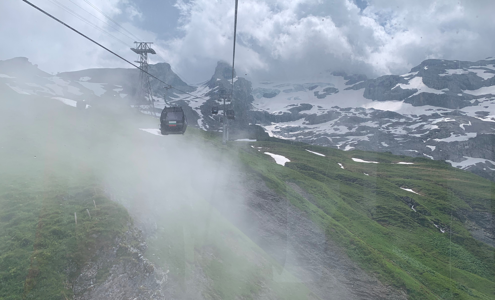

Europe
In July of 2019, my family and I traveled to Europe for 11 days and we visited Germany, Switzerland, Vatican City, Italy, Monaco and France. It was exciting to see many famous monuments and I enjoyed the beautiful scenery.
When my family arrived at the airport, it was buzzing as people were checking in and going through security. The feeling of an airport made me exhilarated for our adventure. We waited a couple of hours as we ate some food before going on the plane. The plane ride was around 9 hours and for most of the time, I watched movies and listened to music.
Our plane arrived in Frankfurt, Germany around 7:00 and we started by going to Heidelberg to see the Heidelberg Castle.
On the second day, we drove to Switzerland and went to Mount Titlis in Engelberg. There was a lot of wind blowing and snow falling creating a fog-like mist. We went into ice caves and explored the mountain top. My family also went to Lucerne and it was calm yet had a beautiful surrounding.

In Venice, we had to take a boat ride to the city and we walked around for the whole day. The city is surrounded by water so we also took another boat through the city, looking at the different buildings as well as shops.
Next, we went to Florence and we saw the Florence Cathedral. It is an amazing monument as it has lots of details on it.
We also went to vatican city, which is the smallest independant country in the world. We also got to see the colosseum in Rome and Tower of Pisa.
We visited a park in Monaco and a beach in Nice, France. The beach was captivating as the sun set in the distance while the sky was colourful.
In Provence, we went sightseeing in Gordes and saw many old buildings in the distance and we also walked around lyon.
The final two days were spent in Paris. We visited the Louvre Museum and saw many sculptures and paintings. The next day, we went to see the Eiffel Tower and also the Opéra.


Other Places That I Travelled to:
Cuba
We went to Varadero and stayed in an accomadation near the beach and restaurants.
Other Provinces in Canada
My family visited Quebec, New Brunswick, Nova Scotia and PEI.
China
My family and my friend's family visited the Great Wall of China as well as performed in an international festival in Beijing.
Cruise
My family took the Norwegian Escape and Visitied many Caribbean islands